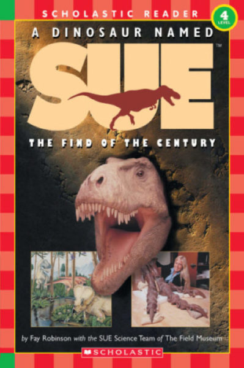

A Dinosaur Named Sue: The Find of the Century

Details
My notes
Sue the dinosaur, published by Scholastic.
About
The strongest match for the remembered Scholastic book is A Dinosaur Named Sue: The Find of the Century by Fay Robinson with the SUE Science Team of The Field Museum, illustrated by Portia Sloan. Published by Scholastic in 1999, it follows the discovery and preparation of the T. rex fossil. ISBN: 9780439099837.
Identification
Scholastic is confirmed from memory. This title and cover are a likely match, awaiting recognition.